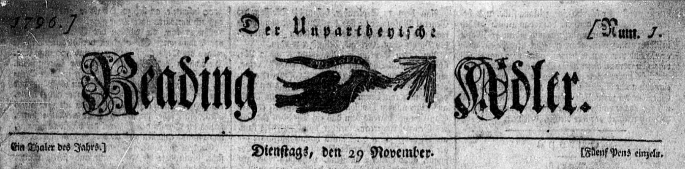

Carnell-Rettgers Family History
German Translation Newspaper Articles
Notes
These articles primarily come from the
Reading Adler
newspaper from Reading, Pennsylvania. The articles were originally written in the Fraktur german type
Translations were performed primarily using
Google Translate
.
Because these articles are all printed prior to 1920, they are in the public domain.
The Fraktur script is the
UniFrakturMaguntia
typeface from the
Adobe Edge Web Fonts
Project
For more information, see this
German word list
and this
Fraktur translation page
.